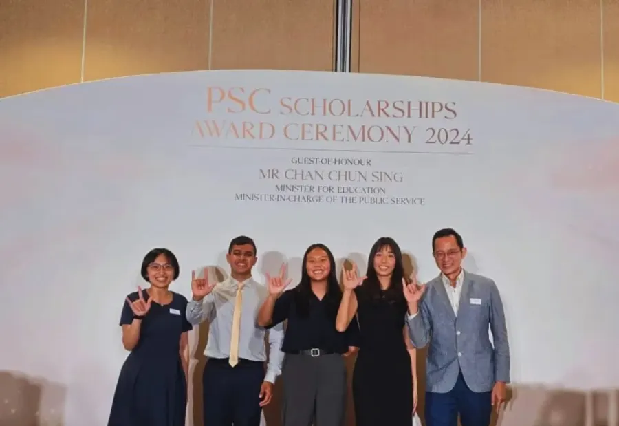

The pre-university and undergraduate scholarships VJC supports, and what seniors say about the interviews.
Scholarships you can apply for while still in JC.

Scholarships for university, with deadlines and how VJC helps you apply.
What to expect at scholarship interviews, and how seniors prepared.